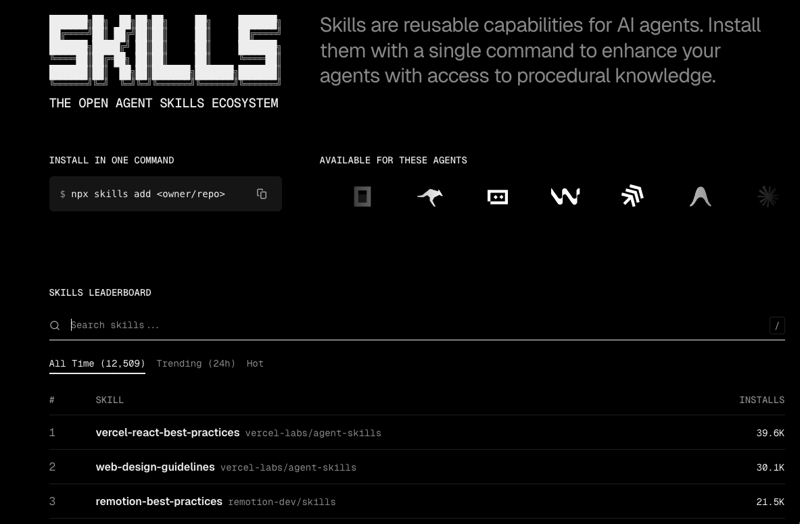

4-7
Claude Hud (Claude Code Only)
- Displays usage, model, branch, current directory, etc. in a bottom status bar
- Installed separately for the Claude Code environment only

Complete Setup Guide
Setting up Claude Code + Codex + gstack + Ralph from scratch, all the way to real-world usage.
About
This document was drafted entirely by Brant Hwang, refined with AI assistance, then generated as HTML slides using the frontend-slides skill and deployed to Vercel.
Slide generation skill: github.com/zarazhangrui/frontend-slides
Overview
Intro
After trying gstack, released by Garry Tan (Y-Combinator CEO), I found it was the perfect harness for my workflow. From planning to review, QA, deployment, and retrospectives — it felt like a fast-moving early-stage startup from the Y-Combinator days, implemented as an AI harness.
So I decided to rebuild my entire AI coding environment from scratch. After testing countless harnesses — bkit, superpower, oh my codex, oh my claude code, and more — my local environment was cluttered with unnecessary files and badly needed a cleanup.
And since I was starting over anyway, I figured documenting the process might help someone doing this for the first time — so I wrote this guide.
Section 01
Wipe all existing configurations clean and start fresh.
1-1
rm -rf ~/.claude.json
rm -rf ~/.claude
rm -rf ~/.mcp.json
rm -f ~/.local/bin/claude
rm -rf ~/.local/share/claude
1-2
npm uninstall @openai/codex
omx uninstall
rm -rf ~/.codex
rm -rf ~/.omx
1-3
rm -rf ~/.agents
You are now back to a completely clean state.
Section 02
2-1
curl -fsSL https://claude.ai/install.sh | bash
brew install rtk # or brew upgrade rtk
rtk init --global
RTK is an LLM Proxy that analyzes LLM token patterns and reduces token usage by 60-90%. It can significantly cut Claude Code costs.
2-2
brew install --cask codex
Warning: Installing via npm causes PATH conflicts when using local node environments through mise, as each project gets a different PATH. Install via brew instead.
2-3
~/.codex/config.toml
model = "gpt-5.4"
model_context_window = 1000000
model_reasoning_effort = "high"
service_tier = "fast"
Section 03
3-1
| Era | Core Competency | Core Question |
|---|---|---|
| 2024 | Prompt Engineering | How to ask AI the right way |
| 2025 | Context Engineering | How to deliver the right information to AI |
| 2026 | Harness Engineering | How to design an environment where AI can't fail |
2024: people who write good prompts → 2025: people who can build agents → 2026: people who can design the environment where AI works
3-2
Karpathy: "Think of an LLM like a CPU, and its context window as the RAM. Your job as an engineer is akin to an OS — load that working memory with just the right code and data for the task."
3-3
You wouldn't tell a new hire "just work" with zero onboarding. AI is no different.
Anthropic: "Long-running agents begin each new session with no memory of what came before — like engineers working in shifts with no handoff documentation."
3-4
Like bowling bumpers — give full freedom and AI flounders; set boundaries and it reaches the answer faster.
3-5
AI replicates good patterns, but it replicates bad patterns too. Without cleanup, quality degrades over time.
3-6
Martin Fowler: "Harness Engineering includes context engineering, architectural constraints, and garbage collection."
Section 04
4-1
I use both Claude Code Enterprise and Codex Enterprise, so any harness change must be applied to both. This is why centralized management is essential.
/plugin → saved in ~/.claude/plugins/cache, auto-injected into System Prompt/plugin don't show in /skills; check via /context instead4-2
| Tool | Central Management | Claude/Codex Dual Support | Verdict |
|---|---|---|---|
| skills.sh | Web registry + CLI | Officially supported | Most polished choice |
| OpenSkills | GitHub-based loader | Support stated | General-purpose package manager |
| SkillDeck | Local GUI app | Support included | Fine for personal Mac, not ideal for teams |
| installagentskills | Catalog-style | Guide only | Decision support tool |
4-3
npx skills check
npx skills update

4-3b
I've already tried superpowers, bkit, omx and others, but gstack felt like the best fit for my style — so I decided to go with gstack as my main harness this time. I'll cover gstack in more detail later on.
| Tool | Strengths | Weaknesses |
|---|---|---|
| superpowers | Rich skill bundles, active community | Not opinionated — weak process enforcement, no browser automation |
| bkit | Highly versatile, flexible extension | No sprint workflow, no QA/deploy pipeline |
| gstack | Full lifecycle structure (plan→review→QA→ship→retro), 100ms persistent browser, parallel sprints | Heavily opinionated, macOS-centric cookie decryption, no iframe support |
Deciding factor: the only option with process enforcement + browser automation + quality gates all in one.
4-4
npx skills add https://github.com/anthropics/skills --skill skill-creator
npx skills add https://github.com/anthropics/skills --skill pdf
npx skills add https://github.com/anthropics/skills --skill xlsx
npx skills add https://github.com/anthropics/skills --skill mcp-builder
npx skills add https://github.com/anthropics/skills --skill frontend-design
npx skills add https://github.com/obra/superpowers --skill using-superpowers
4-5
npx skills add vercel/vercel
npx skills add https://github.com/vercel-labs/agent-skills --skill vercel-react-best-practices
npx skills add https://github.com/vercel-labs/agent-skills --skill web-design-guidelines
npx skills add https://github.com/zarazhangrui/frontend-slides --skill frontend-slides
npx skills add https://github.com/garrytan/gstack.git --skill gstack
npx skills add https://github.com/supercent-io/skills-template --skill ralph
npx skills add https://github.com/obra/superpowers --skill using-superpowers
4-6
~/.agents/skills → symbolic link to ~/.claude/skills~/.agents/skills, so no separate linking is neededCodex's built-in Skill Creator / Skill Installer are outperformed by Vercel's find-skills and Anthropic's skill-creator, so disabling them is recommended.
4-7
Section 05
5-1
"A skill pack + ultra-fast browser automation tool that makes AI coding agents operate like a virtual development team with separated roles, rather than a chatbot assistant."
The key isn't a new model — it's that it strongly structures the development process.
GitHub: github.com/garrytan/gstack
5-2
Strip away the marketing, and the essence is "a prompt operating system + fast browser QA"
5-3
Forces planning → design → implementation → review → QA → deploy → retro via imperative skills
Keeps Chromium alive once launched; subsequent commands take 100-200ms
Independent browser/state/logs per workspace
Bundles not just code, but bugs, tests, docs, and releases together
5-4
git clone ...gstack.git ~/.claude/skills/gstack
cd ~/.claude/skills/gstack && ./setupgit clone ...gstack.git ~/.codex/skills/gstack
cd ~/.codex/skills/gstack && ./setup --host codex5-5
gstack is not a "collection of commands" — it's essentially a sprint operation protocol. There is no dedicated "implementation" skill; after plan review, you instruct Claude Code to implement directly.
5-6
5-7
5-8
.gstack/browse.json records pid, port, and tokensnapshot -i creates @e1, @e2 refs (accessibility tree based)5-9
locator.count(), returns "take a new snapshot" error5-10
| Area | Improvement |
|---|---|
| Planning Quality | Redefines feature requests as product problems |
| Implementation Quality | Enforces diagrams, failure modes, and test matrices |
| UI Quality | Strong aesthetic standards that reduce "AI slop" |
| QA Quality | Real browser clicks → issues → fixes → regression tests |
| Deployment Quality | Bootstraps test frameworks if none exist |
| Documentation Quality | Auto-detects and fixes documentation drift |
| Multi-agent | Parallel sprint operation with Conductor |
5-11
| Skill | Description |
|---|---|
/office-hours | Initial interview / reframing |
/plan-ceo-review | Founder-perspective redesign |
/plan-eng-review | Architecture, data flow, test plan |
/plan-design-review | Design completeness check |
/design-consultation | Design system creation |
/review | Paranoid structural bug review |
/investigate | No guessing — root-cause-first debugging |
5-12
| Skill | Description |
|---|---|
/design-review | Visual audit of the live site |
/qa | Browser-based QA + regression testing |
/qa-only | Bug report only, no fixes |
/ship | Test → PR → release wrap-up |
/document-release | Sync docs with code changes |
/retro | Weekly retrospective + metrics analysis |
/browse | High-speed persistent browser automation |
5-13
| Skill | Description |
|---|---|
/setup-browser-cookies | Reuse sessions with real browser cookies |
/codex | Independent second review via Codex CLI |
/careful | Warns about destructive commands |
/freeze | Restricts edits outside a specific directory |
/guard | careful + freeze combined |
/unfreeze | Lifts freeze restrictions |
/gstack-upgrade | Detects install location and upgrades |
/find-skills | Search for and install new skills |
5-14
| Skill | Purpose |
|---|---|
/office-hours | Brainstorming, "Is this worth building?" assessment |
/plan-ceo-review | Strategy-level plan review (scope expansion/reduction) |
/plan-eng-review | Architecture/engineering perspective review |
/plan-design-review | Design/UX perspective review |
5-15
5-16
5-17
# Open a page
$B goto https://example.com
# Check interactive elements
$B snapshot -i
# Click / input
$B click @e3
$B fill @e4 "value"
# diff / screenshot / responsive
$B snapshot -D
$B screenshot /tmp/result.png
$B responsive /tmp/layout
5-18
5-19
gstack is not "a tool that makes AI smarter" — it's "a way to run AI like a team."
Section 06
6-1
@RTK.md reference)~/.codex/AGENTS.md6-1+
6-2
6-3
6-4
The test: Every changed line should trace directly to the user's request.
6-5
1. [Step] → verify: [check]
2. [Step] → verify: [check]
3. [Step] → verify: [check]6-6
Add the following from the gstack GitHub README.md to the bottom of your CLAUDE.md & AGENTS.md.
# Gstack
To use the /browse skill from gstack for all web browsing,
never use mcp__claude-in-chrome__* tools, and lists the
available skills: /office-hours, /plan-ceo-review,
/plan-eng-review, /plan-design-review, /design-consultation,
/review, /ship, /browse, /qa, /qa-only, /design-review,
/setup-browser-cookies, /retro, /investigate,
/document-release, /codex, /careful, /freeze, /guard,
/unfreeze, /gstack-upgrade.
6-7
You can implement from a finalized PRD using Ralph, but there's also the sub-agent approach. For this case, add the sub-agent directive as well.
# Subagent-Based Workflow
**Load skills**: `superpowers:executing-plans`,
`superpowers:dispatching-parallel-agents`
## Principle
The main context should be handled only by the orchestrator.
All implementation and review work should be delegated to subagents.
## Task Loop
| Step | Owner | Description |
| 1. Planning | Opus 4.6 subagent | Create implementation plan |
| 2. Implementation | Sonnet 4.6 subagent | Write code |
| 3. Review | Opus 4.6 subagent | Run /simplify & fix |
| 4. Commit | Main | Commit & mark complete |
Enter the following prompt for a plan document generated by gstack:
{plan document path} 를 서브에이전트 기반으로 작업해줘.
6-8
Only CLAUDE.md has @RTK.md at the very last line.
# CLAUDE.md
Behavioral guidelines to reduce common LLM coding mistakes.
Merge with project-specific instructions as needed.
**Tradeoff:** These guidelines bias toward caution over speed.
For trivial tasks, use judgment.
## 1. Think Before Coding
**Don't assume. Don't hide confusion. Surface tradeoffs.**
- State your assumptions explicitly. If uncertain, ask.
- If multiple interpretations exist, present them - don't pick silently.
- If a simpler approach exists, say so. Push back when warranted.
- If something is unclear, stop. Name what's confusing. Ask.
## 2. Simplicity First
**Minimum code that solves the problem. Nothing speculative.**
- No features beyond what was asked.
- No abstractions for single-use code.
- No "flexibility" or "configurability" that wasn't requested.
- If you write 200 lines and it could be 50, rewrite it.
## 3. Surgical Changes
**Touch only what you must. Clean up only your own mess.**
- Don't "improve" adjacent code, comments, or formatting.
- Don't refactor things that aren't broken.
- Match existing style, even if you'd do it differently.
- Remove imports/variables/functions that YOUR changes made unused.
## 4. Goal-Driven Execution
**Define success criteria. Loop until verified.**
- "Add validation" → "Write tests for invalid inputs, then make them pass"
- "Fix the bug" → "Write a test that reproduces it, then make it pass"
- "Refactor X" → "Ensure tests pass before and after"
---
# Gstack
To use the /browse skill from gstack for all web browsing,
never use mcp__claude-in-chrome__* tools, and lists the
available skills: /office-hours, /plan-ceo-review, ...
# Subagent-Based Workflow
**Load skills**: `superpowers:executing-plans`,
`superpowers:dispatching-parallel-agents`
## Principle
The main context → orchestrator only. Implementation → subagents.
## Task Loop
| Step | Owner | Description |
| 1. Planning | Opus 4.6 | Create implementation plan |
| 2. Implementation | Sonnet 4.6 | Write code |
| 3. Review | Opus 4.6 | Run /simplify & fix |
| 4. Commit | Main | Commit & mark complete |
@RTK.md ← CLAUDE.md only (not in AGENTS.md)
Section 07
Building a Todo Web App with gstack + Ralph
Step 1
Claude asks Socratic questions:
Idea crystallized → "A CLI-first Todo app for developers. The web dashboard is view-only."
Step 2
Plan review from a CEO/founder perspective:
Decision: Phase 1 is web CRUD only. CLI moves to Phase 2.
Step 3
Lock down the architecture:
Todo { id, title, completed, createdAt, updatedAt }/api/todos (GET, POST, PUT, DELETE)Step 4
DESIGN.md + font/color preview pageStep 5
Stepping outside gstack's domain, Ralph enters the picture. With the plan finalized, hand off implementation to a Ralph loop.
/ralph-loop "
Phase 1: Project init (Next.js + Prisma)
Phase 2: API implementation (/api/todos CRUD)
Phase 3: UI implementation (follow DESIGN.md)
Phase 4: Testing (Vitest + Playwright, coverage 80%+)
" --completion-promise "COMPLETE" --max-iterations 30
Step 5 (continued)
COMPLETE → loop terminatesNo human intervention needed. Run it overnight and check the results in the morning.
Step 6-7
Step 8-9
Step 10-11
Step 12
Summary
gstack provides the process skeleton, Ralph provides the automated iteration loop. The key combination that lets a solo developer maintain team-level quality gates while automating implementation.
Appendix
A.1
| Directory | Role |
|---|---|
commands/ | Workflow entry points |
agents/ | Isolated role-based workers |
skills/ | Reusable knowledge/procedures |
hooks/ | Event-driven automation |
rules/ | Context injection with fine-grained rules |
settings.json | Controls permissions, UI, hooks, MCP |
agent-memory/ | Agent persistent memory |
A.2
Commands orchestrate the flow, Agents work independently, Skills provide reusable knowledge/procedures, and Hooks attach automation from the outside.
CLAUDE.md + .mcp.json.claude alone only gives you half the pictureA.3
Don't dump complex tasks into a single agent:
A.4
Independent actors with "fresh isolated context".
| Field | Description |
|---|---|
name / description | Identifier / when to use it |
allowedTools / model | Tool scope / haiku, sonnet, opus, inherit |
maxTurns / skills | Max turns / skills to preload |
memory / isolation | user, project, local / worktree |
Multiple small role-specific agents beat one large do-everything agent.
A.5
Called by a command or user. Runs in the current context. Great for reusing common procedures.
Added to an agent's skills: field to inject at startup. "Working knowledge this agent needs." Can hide from menus with user-invocable: false.
The description enters the initial context; full content loads only on invocation. Verbose descriptions just consume context budget.
A.6
Runs outside the agentic loop, not inside it.
| Event | Timing |
|---|---|
| PreToolUse / PostToolUse | Just before/after tool use |
| SessionStart / SessionEnd | Session start/end |
| SubagentStart / SubagentStop | Sub-agent lifecycle |
| TaskCompleted / WorktreeCreate | Task completed / worktree created |
This repo consolidates everything into a single hooks.py with on/off via config file — simple to deploy and share.
A.7
A.8
| Mode | Scope |
|---|---|
memory: project | Shared team asset |
memory: user | User-global memory |
memory: local | Personal, not committed to git |
Skill = static design knowledge injected at startup
Memory = dynamic operational knowledge accumulated while working
Mixing both is the real-world pattern.
A.9
| Item | When to Use | Context | Best Role |
|---|---|---|---|
| Command | User initiates directly | Current session | Entry point, sequencing |
| Agent | Independent role needed | New/isolated | Investigation, implementation, review |
| Skill | Reusable knowledge/procedure | Current/preload | Common task rules |
Entry point → command / Role separation → agent / Reusable playbook → skill
A.10
CLAUDE.md = high-level principles / rules/ = narrow-scope rulessettings.json = Claude behavior control / .mcp.json = external server connectionsRepresentative pattern: Command → Agent (with preloaded skill) → Skill
Example: /weather-orchestrator → weather-agent(weather-fetcher preload) → weather-svg-creator
A.11
A.12
Bash(npm run *), Edit(/docs/**) patterns allowed. Destructive actions → ask/deny. "Intentionally narrow" is the default.A.13
A.14
project/
├── CLAUDE.md # Short high-level rules
├── .mcp.json # External server connections
└── .claude/
├── settings.json / settings.local.json
├── rules/ # Domain-specific detailed rules
├── commands/ # Human-initiated workflows
├── agents/ # Role separation
├── skills/ # Reusable knowledge
└── hooks/ # Auto format/validate/notify
A.15
Adopting everything at once is overkill. Go step by step:
A.16
.claude is not just a config folder — it's the Claude Code operating layer.Thank You
Claude Code · Codex · gstack · Ralph